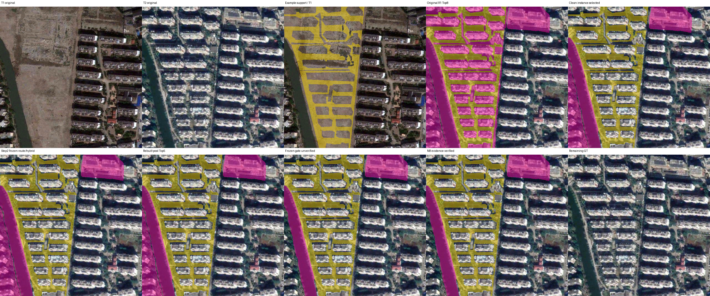
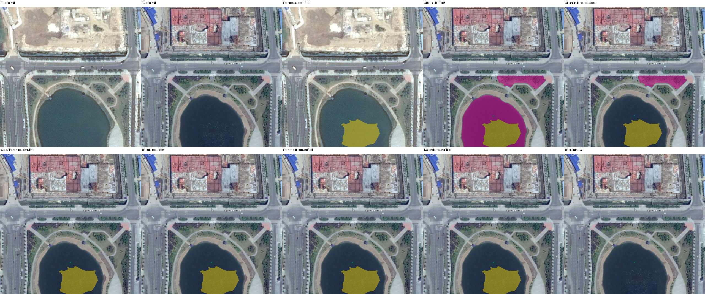
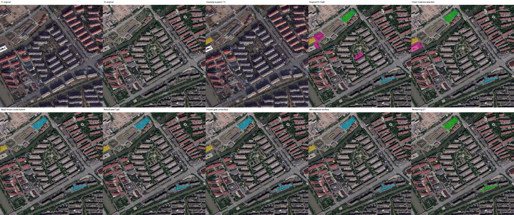
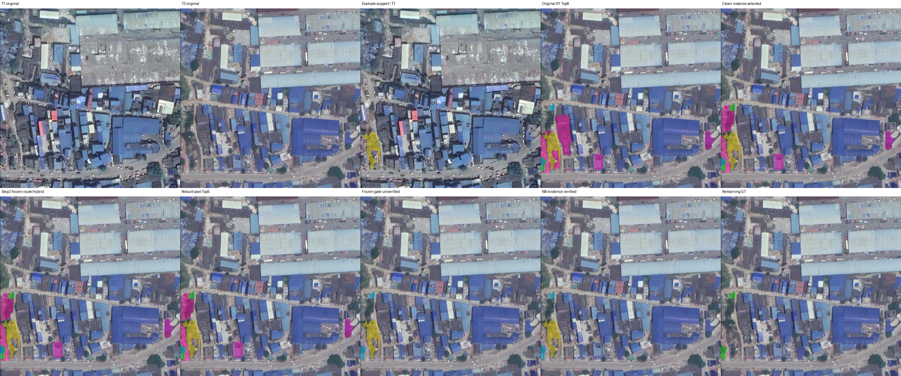
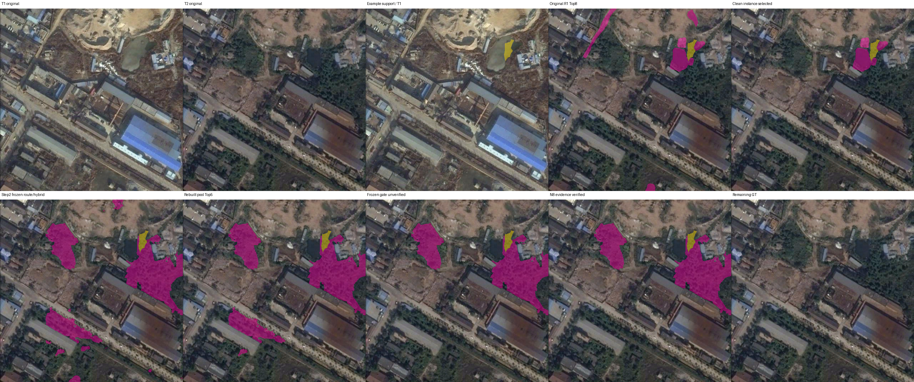
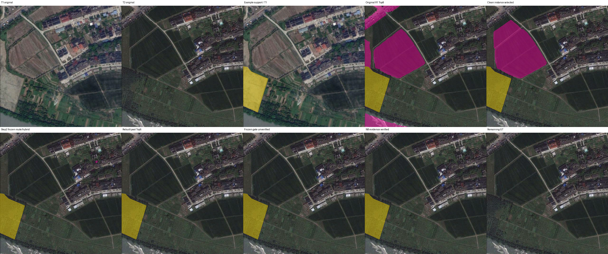

01 · train_1496_2to1
tiny remaining-GT diagnostic requested after Step1 audit
剩余 GT 4 pxE 预测 non-vegetated ground → buildinggate True · z 3.837 · p 0.248
| 阶段 | F1 | TP | FP | FN |
|---|
| 原 R1 Top8 | 0.008 | 4 | 103972 | 0 |
| 冻结 gate/K · 未核验 | 0.000 | 0 | 29049 | 4 |
| 最终 N8 | 0.000 | 0 | 29049 | 4 |

前五候选：两期原图覆盖、掩码和实际回答
候选1 · yes面积 12596 · 相似度 0.726 · ptrans 0.248
候选2 · yes面积 15294 · 相似度 0.604 · ptrans 0.011
候选3 · yes面积 13442 · 相似度 0.508 · ptrans 0.002
候选4 · 未送审面积 12412 · 相似度 0.490 · ptrans 0.018
02 · train_1535_4to1
tiny remaining-GT diagnostic requested after Step1 audit
剩余 GT 14 pxE 预测 water → watergate False · z 0.000 · p 0.000
| 阶段 | F1 | TP | FP | FN |
|---|
| 原 R1 Top8 | 0.090 | 14 | 31049 | 0 |
| 冻结 gate/K · 未核验 | 0.000 | 0 | 0 | 14 |
| 最终 N8 | 0.000 | 0 | 0 | 14 |

前五候选：两期原图覆盖、掩码和实际回答
03 · train_23_2to1
largest remaining clean-instance gain under tune-frozen instance configuration
剩余 GT 3235 pxE 预测 non-vegetated ground → non-vegetated groundgate False · z 0.000 · p 0.000
| 阶段 | F1 | TP | FP | FN |
|---|
| 原 R1 Top8 | 45.169 | 1973 | 3528 | 1262 |
| 冻结 gate/K · 未核验 | 0.000 | 0 | 0 | 3235 |
| 最终 N8 | 0.000 | 0 | 0 | 3235 |

前五候选：两期原图覆盖、掩码和实际回答
04 · train_1370_3to1
largest remaining clean-instance gain under tune-frozen instance configuration
剩余 GT 791 pxE 预测 building → non-vegetated groundgate False · z 4.477 · p 0.046
| 阶段 | F1 | TP | FP | FN |
|---|
| 原 R1 Top8 | 5.155 | 241 | 8319 | 550 |
| 冻结 gate/K · 未核验 | 0.000 | 0 | 0 | 791 |
| 最终 N8 | 0.000 | 0 | 0 | 791 |

前五候选：两期原图覆盖、掩码和实际回答
候选1 · 未送审面积 1651 · 相似度 0.812 · ptrans 0.046
候选2 · 未送审面积 897 · 相似度 0.641 · ptrans 0.048
候选3 · 未送审面积 786 · 相似度 0.634 · ptrans 0.045
候选4 · 未送审面积 2512 · 相似度 0.633 · ptrans 0.041
候选5 · 未送审面积 1160 · 相似度 0.631 · ptrans 0.032
05 · train_2383_2to5
largest remaining image-F1 harm (or smallest gain if no harm)
剩余 GT 14568 pxE 预测 non-vegetated ground → buildinggate False · z 2.297 · p 0.071
| 阶段 | F1 | TP | FP | FN |
|---|
| 原 R1 Top8 | 64.475 | 11776 | 10185 | 2792 |
| 冻结 gate/K · 未核验 | 0.000 | 0 | 0 | 14568 |
| 最终 N8 | 0.000 | 0 | 0 | 14568 |

前五候选：两期原图覆盖、掩码和实际回答
候选1 · 未送审面积 3105 · 相似度 0.724 · ptrans 0.071
候选2 · 未送审面积 2200 · 相似度 0.686 · ptrans 0.185
候选3 · 未送审面积 4825 · 相似度 0.680 · ptrans 0.168
候选4 · 未送审面积 2304 · 相似度 0.654 · ptrans 0.135
候选5 · 未送审面积 2491 · 相似度 0.650 · ptrans 0.154
06 · train_2043_2to3
largest remaining image-F1 harm (or smallest gain if no harm)
剩余 GT 386 pxE 预测 tree → low vegetationgate False · z 3.488 · p 0.047
| 阶段 | F1 | TP | FP | FN |
|---|
| 原 R1 Top8 | 35.399 | 337 | 1181 | 49 |
| 冻结 gate/K · 未核验 | 0.000 | 0 | 0 | 386 |
| 最终 N8 | 0.000 | 0 | 0 | 386 |

前五候选：两期原图覆盖、掩码和实际回答
候选1 · 未送审面积 1 · 相似度 0.865 · ptrans 0.047
候选2 · 未送审面积 22 · 相似度 0.742 · ptrans 0.069
候选3 · 未送审面积 13 · 相似度 0.670 · ptrans 0.045
候选4 · 未送审面积 98 · 相似度 0.402 · ptrans 0.217
候选5 · 未送审面积 387 · 相似度 0.362 · ptrans 0.164
07 · train_2255_2to5
largest remaining image-F1 harm (or smallest gain if no harm)
剩余 GT 3859 pxE 预测 non-vegetated ground → buildinggate False · z 8.313 · p 0.027
| 阶段 | F1 | TP | FP | FN |
|---|
| 原 R1 Top8 | 33.293 | 3031 | 11318 | 828 |
| 冻结 gate/K · 未核验 | 0.000 | 0 | 0 | 3859 |
| 最终 N8 | 0.000 | 0 | 0 | 3859 |

前五候选：两期原图覆盖、掩码和实际回答
候选1 · 未送审面积 4366 · 相似度 0.756 · ptrans 0.027
候选2 · 未送审面积 5330 · 相似度 0.376 · ptrans 0.123
候选3 · 未送审面积 6738 · 相似度 0.375 · ptrans 0.023
候选4 · 未送审面积 5376 · 相似度 0.372 · ptrans 0.123
候选5 · 未送审面积 11973 · 相似度 0.371 · ptrans 0.030
08 · train_1129_4to5
largest remaining image-F1 gain (or smallest harm if no gain)
剩余 GT 0 pxE 预测 non-vegetated ground → buildinggate False · z 2.009 · p 0.091
| 阶段 | F1 | TP | FP | FN |
|---|
| 原 R1 Top8 | 0.000 | 0 | 8423 | 0 |
| 冻结 gate/K · 未核验 | 0.000 | 0 | 0 | 0 |
| 最终 N8 | 0.000 | 0 | 0 | 0 |

前五候选：两期原图覆盖、掩码和实际回答
候选1 · 未送审面积 410 · 相似度 0.606 · ptrans 0.091
候选2 · 未送审面积 1753 · 相似度 0.568 · ptrans 0.104
候选3 · 未送审面积 2523 · 相似度 0.555 · ptrans 0.097
候选4 · 未送审面积 4024 · 相似度 0.522 · ptrans 0.084
候选5 · 未送审面积 2786 · 相似度 0.513 · ptrans 0.081
09 · train_1884_4to3
largest remaining empty-target FP
剩余 GT 0 pxE 预测 non-vegetated ground → treegate True · z 2.933 · p 0.156
| 阶段 | F1 | TP | FP | FN |
|---|
| 原 R1 Top8 | 0.000 | 0 | 7023 | 0 |
| 冻结 gate/K · 未核验 | 0.000 | 0 | 23794 | 0 |
| 最终 N8 | 0.000 | 0 | 23778 | 0 |

前五候选：两期原图覆盖、掩码和实际回答
候选1 · yes面积 16782 · 相似度 0.496 · ptrans 0.156
候选2 · no面积 16 · 相似度 0.445 · ptrans 0.069
候选3 · yes面积 6996 · 相似度 0.394 · ptrans 0.153
候选4 · 未送审面积 282 · 相似度 0.392 · ptrans 0.114
候选5 · 未送审面积 5874 · 相似度 0.358 · ptrans 0.127
10 · train_156_2to3
largest remaining empty-target FP
剩余 GT 0 pxE 预测 non-vegetated ground → treegate True · z 2.375 · p 0.211
| 阶段 | F1 | TP | FP | FN |
|---|
| 原 R1 Top8 | 0.000 | 0 | 41300 | 0 |
| 冻结 gate/K · 未核验 | 0.000 | 0 | 3 | 0 |
| 最终 N8 | 0.000 | 0 | 3 | 0 |

前五候选：两期原图覆盖、掩码和实际回答
候选1 · yes面积 1 · 相似度 0.917 · ptrans 0.211
候选2 · yes面积 1 · 相似度 0.913 · ptrans 0.227
候选3 · yes面积 1 · 相似度 0.695 · ptrans 0.122
候选4 · 未送审面积 1 · 相似度 0.549 · ptrans 0.142
候选5 · 未送审面积 1 · 相似度 0.251 · ptrans 0.056